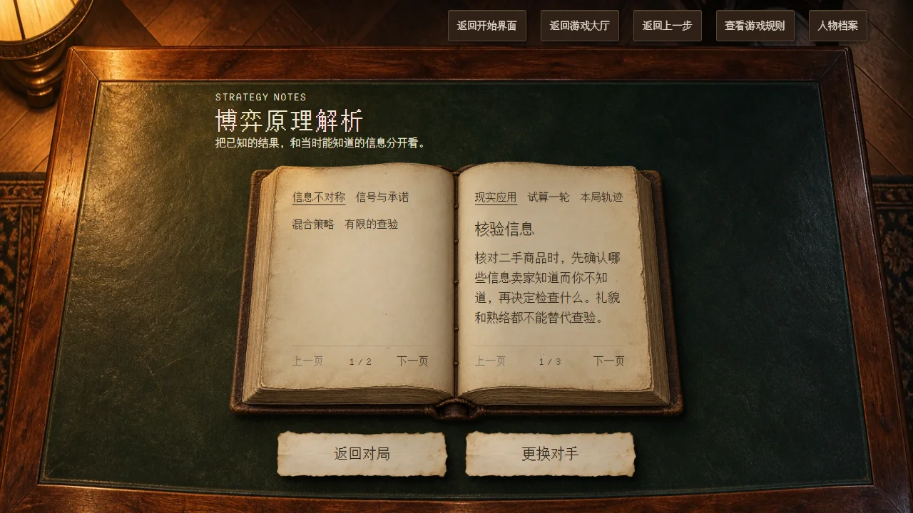
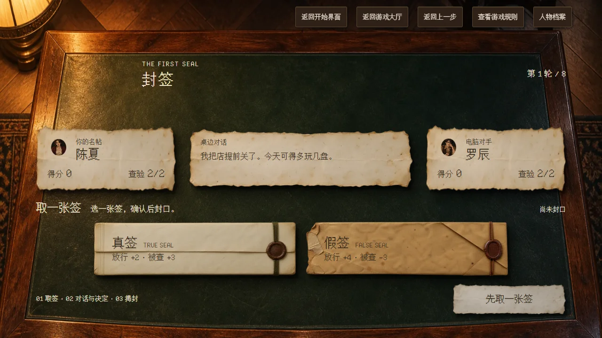

把有趣的博弈理论，做成可以体验的游戏
我是商科专业的。在我的学习体验里，很多本该有趣的博弈理论，被课本和考试变成了枯燥的公式与题目。后来，我在影视剧中重新爱上了博弈：试探、信任和取舍都有鲜活的情境。我希望把这种趣味做成简单好上手、玩完有收获的小游戏，让人边玩边理解，寓教于乐。
- 产品机制
- 用简单选择体验博弈，再通过复盘和试算理解决策背后的原理。
- 视觉与交互
- 确定暖光俱乐部、像素人物与实物纸面语言，让规则在书里、选择在签上。
- AI 协作落地
- 定义需求、检查实机并持续修正，用 Codex 辅助完成实现、测试与公网部署。
当前可体验：1 款完整玩法《封签》、4 位原创角色、8 轮对局，以及决策记录和博弈原理试算。
在一局游戏里，发现博弈论的趣味
我希望玩家先在对局里感受到“这次该不该查”的犹豫，再回看选择、得分和原理。通过调整假签概率、比较查验与放行的收益，把抽象的博弈知识和亲手做过的决定联系起来，让玩过一局之后多一点理解。

试算按玩家设定的概率比较本轮期望得分，暂不计后续机会成本。
让对手有值得观察的特点
我从智斗作品中的人物关系获得灵感，设计四位原创角色，通过背景、说话习惯和策略偏好建立差异。玩家可以选择面对谁，在同一套规则下感受不同对手。
把操作做简单，把取舍留给玩家
《封签》中，每人出签四次，却只有两次查验机会。我把交互组织成四步，让玩家集中考虑这次选择是否值得。
- 出签选择真签或假签，封好后不能更换。
- 试探选一句回应，也可以保持沉默。
- 决定查验或放行，权衡当下与剩余机会。
- 回看揭晓真假和得分，复盘每轮选择。

我的取舍：重新组织玩法
体验过与 AI 玩剧本杀后，我更想用简单行动参与心理博弈。因此，我选择重新设计互动形式，把角色、决策和反馈连在一起。
视觉也服务于这条体验链路：从俱乐部门口走到圆桌，再坐到书桌前；规则放进书页，选择落在纸签上，复盘回到卷宗里。我的工作包括确定这套语言，并通过逐页检查和反馈，把生成素材调整成能操作、能阅读的界面。
下一步，先验证重玩动力
我会先通过真实试玩，观察玩家能否独立完成一局、是否主动重开，以及复盘是否影响下一局的判断。再据此调整角色策略与情绪表现，继续完善另外三张筹备中的牌桌。
查看当前实现与后续计划
当前对手由规则策略与预写台词驱动，已有轻量策略差异。更丰富的情绪演出，以及《最后证词》《盲池》《第三席》仍在计划中。
本项目已完成可玩原型与公开部署；用户体验效果尚待真实试玩验证。复盘不承诺每轮全局最优解。
编码、美术制作、测试与部署使用 Codex 辅助完成；我负责玩法与角色方向、视觉和交互要求、反馈与验收。